IL GUIDE
AION2 IL上げガイド｜IL1400〜1600の進め方
IL1400からIL1600までの上げ方と、あわせて上げておきたい戦闘力(CP)、強化石・アビスの羽の集め方をまとめています。IL1400までの進め方は前のページを見てください。
1400に向けて強化を理解できた方なら、「あれ？意外とすぐいけそうだな」ってなると思います。
| ▶ IL1600の装備の目安 | ▶ ①IDで装備を取得 | ▶ ②運が悪い人 |
| ▶ ③戦闘力(CP) | ▶ ④強化石の集め方 | ▶ ⑤アビスの羽集め |
IL1600の装備の目安
まず、IL1600だと装備はこれくらいです。
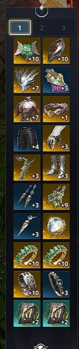
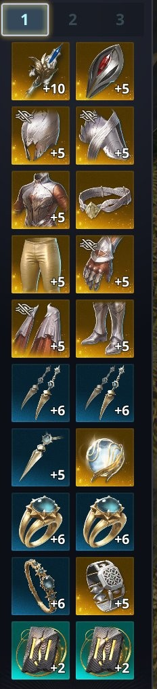
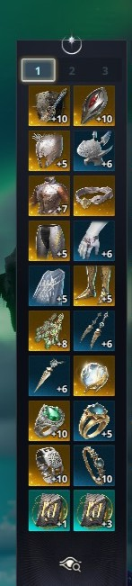
①IDで装備を取得する
IL1400を超えると、この2種の征服(Hard)IDに入れるようになります。
| ID | 確定報酬で選べるもの |
|---|---|
| ウルググ峡谷 | アクセサリー(ネックレス・イヤリング・リング) |
| バクロンの空中島 | 防具(プレート・ゲートル・ヘルム・ショルダー・グローブなど) |
| 入場条件 | IL1400以上、2人〜5人 |
| 確定報酬 | 箱を21回開けると1つ選べる |
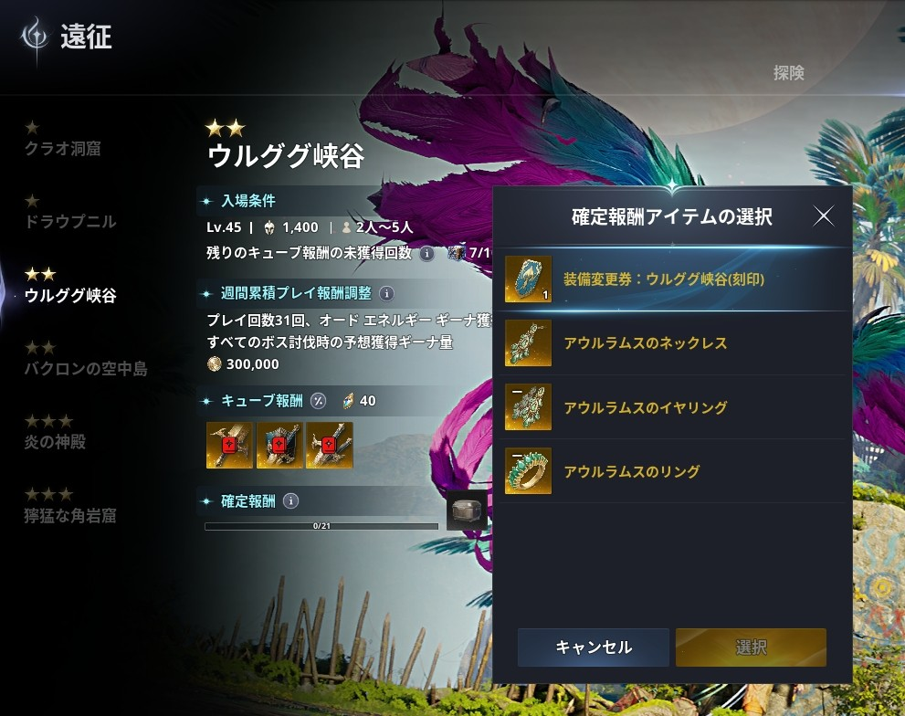
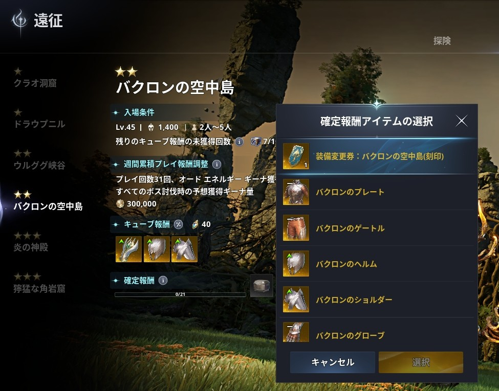
ここからは確定箱の回数が21回に増え、運も必要になってきます。毎日NCへのお祈りを欠かさず、他人に優しく、天族を駆逐して徳を積みましょう。
運が良ければ4〜5か所拾えて、適当に強化すればIL1600です。おめでとう！！
②運が悪い人
残念ながら装備が拾えなかった方は、確定報酬で足りない部位を埋めます。
| 手順 | やること |
|---|---|
| 1 | ウルググ峡谷をまず21箱開ける。その間に出なかったアクセサリーを確定報酬で交換 |
| 2 | 次にバクロンの空中島を21箱開ける。その間に出なかった防具を確定報酬で交換 |
| 3 | 強化して下級魔石を入れる |
これで1600に届くはずです。
③戦闘力(CP)
だんだんPT募集で、ILとは別に「80k」「90k」といった戦闘力(CP)の条件が見えるようになります。
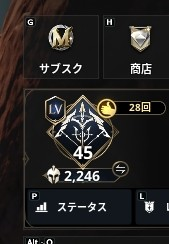
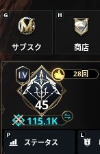
※数字の横の⇔のようなマークで、ILとCPの表示を切り替えられます。
ILとCPの上げ方の違い
| 上げたいもの | 上げ方 |
|---|---|
| IL | 装備品、アルカナ、ディーヴァニオンボード |
| CP | スキルレベル、スティグマレベル、ディーヴァニオンボード、ペット厳選 |
特にスティグマがおすすめスティグマはCPを上げやすいです。スキル自体も強力なものが多く、スキルレベル10・15・20で付く追加効果がめちゃくちゃ強くなることがあります。
スキルとスティグマ
| 上げるもの | 素材の入手先 |
|---|---|
| スキル | スキルポイント:レベルアップ、サブクエ |
| スティグマ | スティグマシャード:AP(アビスポイント。主にPvP系コンテンツで取得)、シューゴポイント・悪夢のポイントで交換 |
CPが大きく伸びるので、コツコツ貯めましょう。
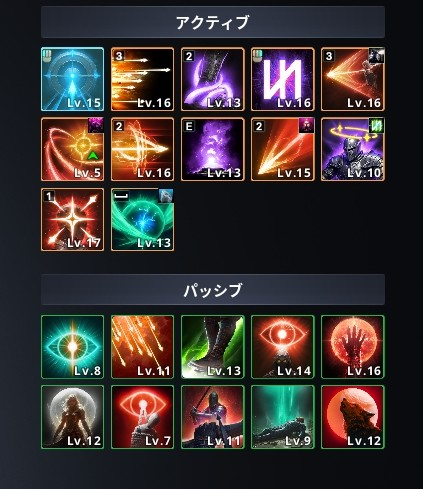
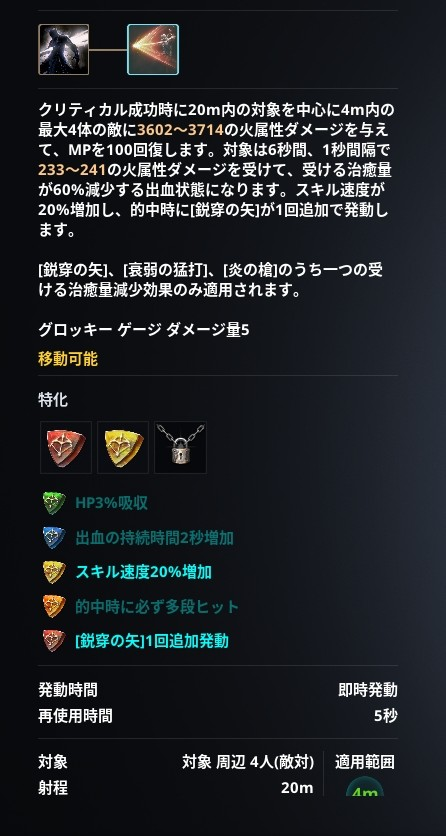
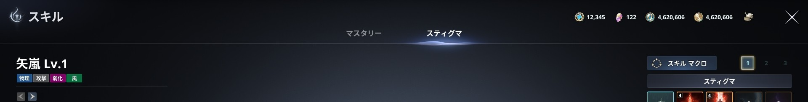
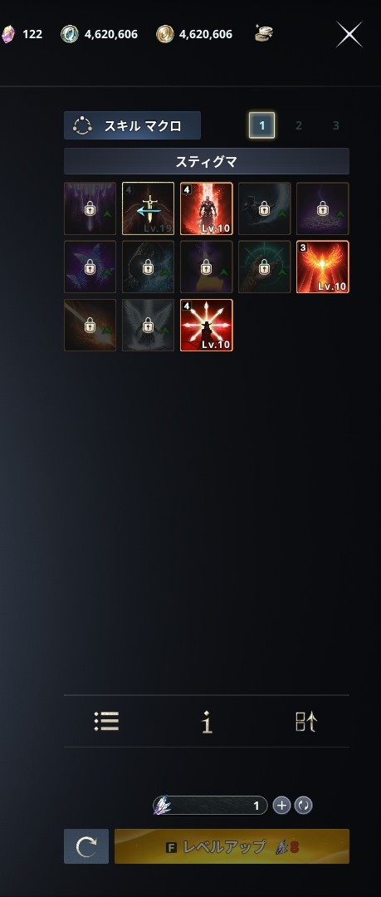
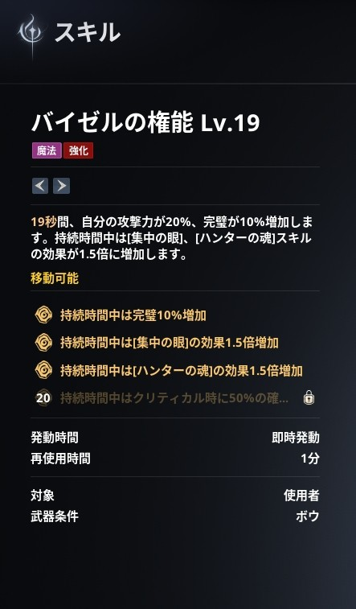
④強化石の集め方
| 方法 | 内容 |
|---|---|
| デイリーダンジョン 週ごとの回数制 | デイリーですが、週に行ける回数が決まっています。溢れさせないように消化しておきましょう。 |
| 時空の亀裂 | 3時間おきにMAPに出現。入ると1時間、天界(魔界)にいられます。 この1時間の間に封印ダンジョンを回ると、強化石とAPを大量に集められます。 ※1か所3〜5分で2500とか貰える |
時空の亀裂の注意ポイントPvEモードで入ればNPC以外から攻撃はされないので、のんびり観光してきてください。
ただしMAPのキベリスク付近や建物の近くには警備兵NPCがいることが多く、一撃で黒ゴマにされるので気を付けましょう。
ただしMAPのキベリスク付近や建物の近くには警備兵NPCがいることが多く、一撃で黒ゴマにされるので気を付けましょう。
⑤アビスの羽集め
アビスの羽集めも重要です。自勢力付近の安全なところから集めましょう。
- アビスにいる時間は1週間で限られています
- 当たり前ですが、敵対種族がいれば襲われます
- 無理だと思ったら一旦その場所はやめて、時間を置くか別の場所を優先しましょう
アビスでは気を抜かない何時間も同じ場所をパトロールしてる奴はそうそういません。でも気を抜かないで。たまにおかしなやつがいます。
IL1600の先
IL1600に到達したら、いよいよ超越IDに挑戦できます！FF14でいうと簡単な極くらいの難易度です。まずは1600まで頑張りましょう！